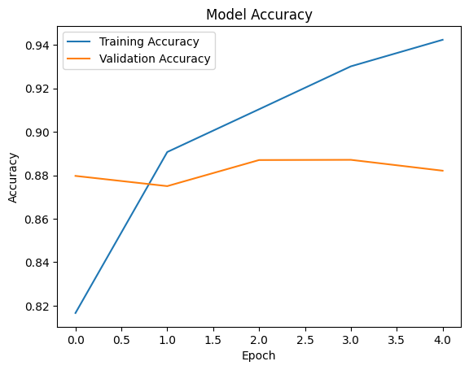

01 · ProblemToo much written feedback to read by hand
Businesses collect far more written feedback than anyone can read: reviews, survey comments, support emails. Having worked in customer support, I know how much signal sits in that text and how rarely it gets used systematically.
The goal: a model that reliably tags a piece of text as positive or negative, and a way for a non-technical person to use it. I built it on a standard benchmark, 50,000 labelled IMDB movie reviews, so the result can be compared with published work.
02 · ApproachClean the text, let the model read in order
- Cleaning: removed HTML tags, punctuation and numbers, and lowercased everything.
- Turning words into numbers: kept the 5,000 most frequent words and padded or trimmed each review to 200 tokens.
- Model: an embedding layer that learns a vector for each word, an LSTM layer that reads the review in sequence (so context like “not good” can count), and a sigmoid output giving the probability of a positive review.
- Split: 80% of reviews for training, 20% (10,000 reviews) held out for testing.
- Deployment: saved the trained model and tokenizer, and wrapped them in a Streamlit app that returns a label and a confidence score.
03 · AnalysisTraining behaviour

Validation accuracy peaked at about 88.7% around epochs three and four. After that, training accuracy kept climbing (to 94%) while validation loss rose from 0.28 to 0.34: the model had started to memorise rather than generalise. Three epochs would have been enough.
04 · Result & insight88% on reviews it had never seen
The model classified 88.2% of the 10,000 held-out reviews correctly, and the app lets anyone paste in a review and see the prediction with its confidence.
I used the test set to monitor training, which makes the reported accuracy slightly optimistic. Next time: a separate validation set with early stopping, then a comparison against a pretrained transformer on the same test set to see what the extra model size actually buys.
05 · Why it mattersWhere this is useful
- Tracking satisfaction over time from comments that currently go unread.
- Prioritising support tickets: strongly negative messages can be routed to experienced agents first.
- Mixed feedback is the hard part. Reviews like “great product, terrible delivery” are exactly where a single positive/negative label falls short, and where an analyst still needs to read the detail.
06 · Tools & codeTools & code
The repository includes the notebook, the saved model and tokenizer, and the Streamlit app.